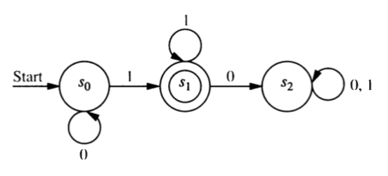
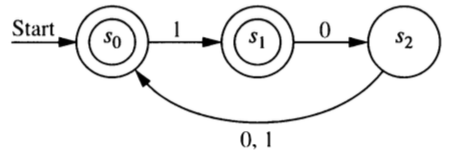
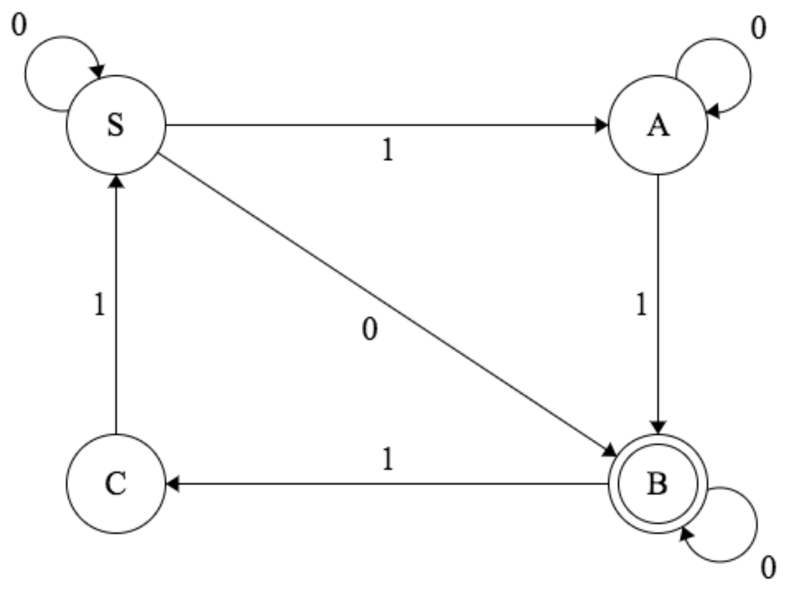
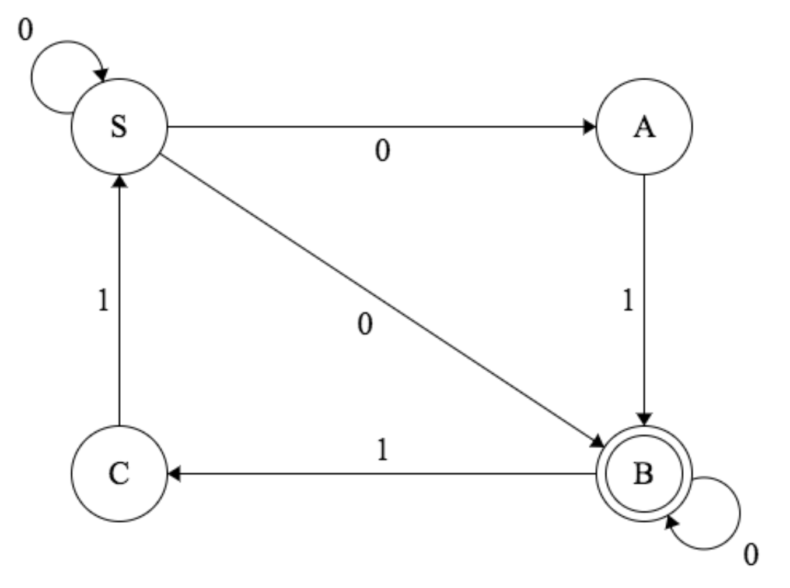
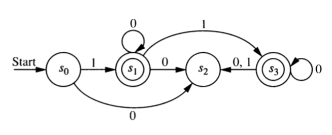

5 Regular Grammars and Automata
5.1 Grammars to Automata
Construct a finite state automaton that recognizes the langauge generated by the following regular grammar.
- terminals: 0 and 1
- nonterminals: \(S\) and \(A\)
- start symbol: \(S\).
- production rules: \(S \to 1A\), \(S \to 0\), \(S\to \lambda\), \(A \to 0A\), \(A \to 1A\), \(A\to 1\)
Construct a finite state automaton that recognizes the langauge generated by the following regular grammar.
- terminals: 0 and 1
- nonterminals: \(S\), \(A\), \(B\)
- start symbol: \(S\).
- production rules: \(S \to 1A\), \(S \to 0\), \(A \to 0B\), \(A \to 1A\), \(A\to 1\) \(B \to 0A\), \(B \to 1B\), \(B\to 0\)
Explain how any regular grammar \(G\) can be converted into an NFA \(N\) such that \(L(N) = L(G)\).
- What is a regular grammar? (What sorts of production rules are allowed?)
- What will the states of \(N\) be? How many will there be?
- What state will be the start state?
- Which states will be final (ie. accepting) states?
- How does each rule in \(G\) get converted into a part of \(N\)? [Go through each kind of rule a regular grammar may have.]
5.2 Automata to Grammars
Show that every DFA or NFA is equivalent to a DFA or NFA with a “lonely start state.” A lonely start state is a start state that can never be returned to. (In terms of the graph, its in-degree is 0.)
Convert each of the automata in the next three problems into an automoton with a lonely start state.
Construct a regular grammar that generates the language accepted by this finite state automaton.

- Construct a regular grammar that generates the language accepted by this finite state automaton.

- Construct a regular grammar that generates the language accepted by this finite state automaton.

- In this problem you will show that any DFA or NFA with a
lonely start state is equivalent to a regular grammar by showing
how to construct a grammar \(G\) from such an automaton.
- What will the terminals and nonterminals in your grammar be?
- What will the start symbol be?
- How are the production rules created?
- Why was it necessary to have a lonely start state?
5.3 Some Review
- Convert each of the following NFA’s into an equivalent DFA. (Rembember: equivalent means that they recognize the same language.) Do this using our general algorithm for this task. For the first two, the start state is \(S\).


